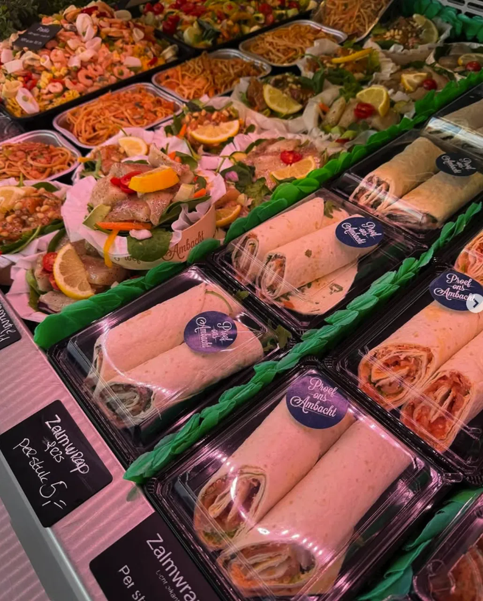

Zaterdag
Bunschoten-Spakenburg
Bij de Vomar
Over deze standplaats

Op zaterdag staan onze medewerkers met onze speciaal voor vis ingerichte verkoopwagen in Bunschoten bij de Vomar Supermarkt.
Even snel naar binnen voor een boodschap terwijl u staat te wachten? Geen probleem! En het belangrijkste: uw vis wordt altijd warm gebakken. Én: gratis parkeren!
Openingstijden
Elke zaterdag
10:00 – 14:00
Bunschoten-Spakenburg · Bij de Vomar
Hier vindt u ons
Op de kaart
Ook op andere dagen